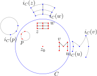

Inversion offers a way to reflect points across a circle. This transformation plays a central role in visualizing the transformations of non-Euclidean geometry, and this section is the foundation of much of what follows.
Suppose \(C\) is a circle with radius \(r\) and center \(z_0\text{.}\) Inversion in the circle \(C\) sends a point \(z \neq z_0\) to the point \(z^*\) defined as follows: First, construct the ray from \(z_0\) through \(z\text{.}\) Then, let \(z^*\) be the unique point on this ray that satisfies the equation
The point \(z^*\) is called the symmetric point to \(z\) with respect to \(C\text{.}\)
Inversion in a circle centered at \(z_0\) is a transformation on the set \(\mathbb{C}-\{z_0\}\) consisting of all complex numbers except \(z_0\text{.}\) We usually denote inversion in the circle \(C\) by by \(i_C(z) =
z^*\text{.}\) In the next section we will discuss how to extend this transformation in a way to include the center \(z_0\text{.}\)
You will work through several features of circle inversions in the exercises, including how to construct symmetry points with compass and ruler (see Figure 3.2.18). We note here that \(i_C\) fixes all the points on the circle \(C\text{,}\) and points inside the circle get mapped to points outside the circle and vice versa. The closer \(z\) gets to the center of the circle, the further \(i_C(z)\) gets from the circle.
Example3.2.1Inversion in the unit circle
The unit circle in \(\mathbb{C}\text{,}\) denoted \(\mathbb{S}^1\text{,}\) is the circle with center \(z_0 = 0\) and radius \(r = 1\text{.}\) The equation for the point \(z^*\) symmetric to a point \(z \neq 0\) with repsect to \(\mathbb{S}^1\) thus reduces from \(|z-z_0|\cdot|z^*-z_0| = r^2\) to
Moreover, \(z^*\) is just a scaled version of \(z\) since they are on the same ray through the origin. That is, \(z^* = kz\) for some positive real number \(k\text{.}\) Plug this description of \(z^*\) into the symmetry point equation to see \(|z| \cdot |kz| = 1,\) which implies \(k = 1/|z|^2\text{.}\) Thus, \(z^*=(1/|z|^2)z\text{.}\) Moreover, \(|z|^2 = z \cdot \overline{z}\text{,}\) so inversion in the unit circle \(\mathbb{S}^1\) may be written as
The following formula for inversion about an arbitrary circle can be obtained by composition of inversion in the unit circle with some general linear transformations. The details are left to Exercise 3.2.1.
Inversion in the circle \(C\) centered at \(z_0\) with radius \(r\)
Inversion in the circle \(C\) centered at \(z_0\) with radius \(r\) is given by
Below we have inverted a circle, the letter ‘M,’ and a small grid across the circle \(C\) centered at \(z_0\text{.}\) It looks as if the image of the circle is another circle, which we will soon prove is the case. We will also prove that lines not intersecting the center of \(C\) get inverted into circles. It follows that the line segments in the ‘M’ get mapped to arcs of circles.

As Example 3.2.2 suggests, the distinction between lines and circles gets muddied a bit by inversion. A line can get mapped to a circle and vice versa. In what follows, it will be helpful to view reflection in a line and inversion in a circle as special cases of the same general map. To arrive at this view we first make lines and circles special cases of the same general type of figure.
Definition3.2.3
A cline is a Euclidean circle or line. Any cline can be described algebraically by an equation of the form
\begin{equation*}
cz\overline{z} + \alpha z + \overline{\alpha}\overline{z} + d = 0
\end{equation*}
where \(z = x + yi\) is a complex variable, \(\alpha\) is a complex constant, and \(c, d\) are real numbers. If \(c = 0\) the equation describes a line, and if \(c
\neq 0\) and \(|\alpha|^2 > cd\) the equation describes a circle.
The word “cline” (pronounced ‘Klein’) might seem a bit forced, but it represents the shift in thinking we aim to achieve. We need to start thinking of lines and circles as different manifestations of the same general class of objects. What class? The class of clines.
Letting \(\alpha = a + bi\) and \(z = x + yi\text{,}\) the cline equation \(cz\overline{z} + \alpha z + \overline{\alpha} \overline{z} + d = 0\) can be written as
\begin{equation*}
c(x^2+y^2)+[ax - by + (ay+bx)i]+[ax-by - (ay+bx)i] + d = 0
\end{equation*}
If \(c = 0\) then we have the equation of a line, and if \(c \neq 0\) we have the equation of a circle, so long as \(a^2 + b^2 > cd\text{.}\) In this case, the equation can be put into standard form by completing the square. Let's run through this.
and we have the equation of a circle so long as the right-hand side (the radius term) is positive. In other words, we have the equation of a circle so long as \(a^2 + b^2>cd\text{.}\) We summarize this information below.
The cline equation
Given \(c, d \in \mathbb{R}\text{,}\) \(\alpha \in \mathbb{C}\text{,}\) if \(c \neq 0\text{,}\) the cline equation
\begin{equation*}
cz\overline{z} + \alpha z + \overline{\alpha}
\overline{z} + d = 0
\end{equation*}
gives a circle with center \(z_0\) and radius \(r\text{,}\) where
\begin{equation*}
z_0=\bigg(-\frac{\text{Re}(\alpha)}{c},
\frac{\text{Im}(\alpha)}{c}\bigg)~~~\text{and}~~~ r =
\sqrt{\frac{|\alpha|^2-cd}{c^2}},
\end{equation*}
so long as \(|\alpha|^2 > cd\text{.}\) If \(c = 0\text{,}\) the cline equation gives a line.
From now on, if you read the phrase “inversion in a cline,” know that this means inversion in a circle or reflection about a line, and if someone hands you a cline \(C\text{,}\) you might say, “Thanks! By the way, is this a line or a circle?”
We note here the construction of a cline through three points in \(\mathbb{C}\text{.}\) This construction is used often in later chapters to generate figures in non-Euclidean geoemtry.
Theorem3.2.4
There exists a unique cline through any three distinct points in \(\mathbb{C}\text{.}\)
Suppose \(u\text{,}\) \(v\text{,}\) and \(w\) are distinct complex numbers. If \(v\) is on the line through \(u\) and \(w\) then this line is the unique cline through the three points. Otherwise, the three points do not lie on a single line, and we may build a circle through these three points as demonstrated in Figure 3.2.5. Construct the perpendicular bisector to segment \(uv\text{,}\) and the perpendicular bisector to segment \(vw\text{.}\) These bisectors will intersect because the three points are not collinear. If we call the point of intersection \(z_0\text{,}\) then the circle centered at \(z_0\) through \(w\) is the unique cline through the three points.
Figure3.2.5 Constructing the unique circle through three points not on a single line.
Theorem3.2.6
Inversion in a circle maps clines to clines. In particular, if a cline goes through the center of the circle of inversion, its image will be a line; otherwise the image of a cline will be a circle.
We prove the result in the case of inversion in the unit circle. The general proof will then follow, since any inversion is the composition of this particular inversion together with translations and dilations, which also preserve clines by Theorem 3.1.9.
Suppose the cline \(C\) is described by the cline equation
\begin{equation*}
cz\overline{z}+\alpha z + \overline{\alpha} \overline{z} +
d = 0,
\end{equation*}
where \(c, d \in \mathbb{R}\text{,}\) \(\alpha \in \mathbb{C}\text{.}\)
We want to show that the image of this cline under inversion in the unit circle, \(i_{\mathbb{S}^1}(C)\text{,}\) is also a cline. Well, \(i_{\mathbb{S}^1}(C)\) consists of all points \(w = 1/\overline{z}\text{,}\) where \(z\) satisfies the cline equation for \(C\text{.}\) We show that all such \(w\) live on a cline.
If \(z \neq 0\) then we may multiply each side of the cline equation by \(1/(z\cdot \overline{z})\) to obtain
\begin{equation*}
c +\alpha \frac{1}{\overline{z}} + \overline{\alpha} \frac{1}{z} +d\frac{1}{z}\frac{1}{\overline{z}}=0.
\end{equation*}
But since \(w = 1/\overline{z}\) and \(\overline{w} = 1/z\text{,}\) this equation reduces to
\begin{equation*}
c +\alpha\cdot w + \overline{\alpha} \cdot \overline{w} +
dw\overline{w}=0,
\end{equation*}
or
\begin{equation*}
dw\overline{w} + \alpha \cdot w + \overline{\alpha} \cdot \overline{w} + c = 0.
\end{equation*}
Thus, the image points \(w\) form a cline equation. If \(d = 0\) then the original cline \(C\) passed through the origin, and the image cline is a line. If \(d \neq 0\) then \(C\) did not pass through the origin, and the image cline is a circle. (In fact, we must also check that \(|\alpha |^2 > dc\text{.}\) This is the case because the original cline equation ensures \(|\alpha|^2 > cd\text{.}\))
We will call two clines orthogonal if they intersect at right angles. For instance, a line is orthogonal to a circle if and only if it goes through the center of the circle. One very important feature of inversion in \(C\) is that clines orthogonal to \(C\) get inverted to themselves. To prove this fact, we first prove the following result, which can be found in Euclid's Elements (Book III, Proposition 36).
Lemma3.2.7
Suppose \(C\) is the circle with radius \(r\) centered at \(o\text{,}\) and \(p\) is a point outside \(C\text{.}\) Let \(s = |p-o|\text{.}\) If a line through \(p\) intersects \(C\) at points \(m\) and \(n\text{,}\) then
Suppose the line through \(p\) does not pass through the center of \(C\text{,}\) as in the diagram below. Let \(q\) be the midpoint of segment \(mn\text{,}\) and let \(d = |q - o|\) as in the diagram. Note also that the line through \(q\) and \(o\) is the perpendicular bisector of segment \(mn\text{.}\) In particular, \(|m-q|=|q-n|\text{.}\)
The Pythagorean theorem applied to \(\Delta pqo\) gives
Since \(|p-q|-|q-n| = |p-m|\) and \(|p-q| + |q-n| = |p-n|\text{,}\) the result follows.
The case that the line through \(p\) goes through the center of \(C\) is left as an exercise.
We note that the quantity \(s^2-r^2\) in the previous lemma is often called the power of the point \(p\) with respect to the circle \(C\text{.}\) That is, if circle \(C\) has radius \(r\) and a point \(p\) is a distance \(s\) from the center of \(C\) then the quantity \(s^2-r^2\) is called the power of the point \(p\text{.}\)
Theorem3.2.8
Suppose \(C\) is a circle in \(\mathbb{C}\) centered at \(z_0\text{,}\) and \(z\neq z_0\) is not on \(C\text{.}\) A cline through \(z\) is orthogonal to \(C\) if and only if it goes through \(z^*\text{,}\) the point symmetric to \(z\) with respect to \(C\text{.}\)
Assume \(C\) is the circle of radius \(r\) centered at \(z_0\text{,}\) and \(D\) is a cline through a point \(z \neq z_0\) not on \(C\text{.}\) Let \(z^*\) denote the point symmetric to \(z\) with respect to \(C\text{.}\)
First, suppose \(D\) is a line through \(z\text{.}\) A line through \(z\) passes through \(z^*\) if and only if it passes through the center of \(C\text{,}\) which is true if and only if the line is orthogonal to \(C\text{.}\) Thus, the line \(D\) through \(z\) contains \(z^*\) if and only if it is orthogonal to \(C\text{,}\) and the theorem is proved in this case.
Now assume \(D\) is a circle through \(z\text{.}\) Let \(o\) and \(k\) denote the center and radius of \(D\text{,}\) respectively. Set \(s = |z_o-o|\text{,}\) and let \(t\) denote a point of intersection of \(C\) and \(D\) as pictured below.
We must argue that \(C\) and \(D\) are orthogonal if and only if \(z^*\) is on \(D\text{.}\) Now, \(C\) and \(D\) are orthogonal if and only if \(\angle otz_0\) is right, which is the case if and only if \(r^2 = s^2-k^2\) by the Pythagorean theorem. Applying Lemma 3.2.7 to the point \(z_0\) (which is outside \(D\)) and the line through \(z_0\) and \(z\text{,}\) we see that
Thus, if we assume \(z^*\) is on \(D\text{,}\) then it must be equal to the point \(w\text{,}\) in which case equations (1) and (2) above tell us \(s^2-k^2 = r^2\text{.}\) It follows that \(D\) is orthogonal to \(C\text{.}\) Conversely, if \(D\) is orthogonal to \(C\text{,}\) then \(s^2-k^2=r^2\text{,}\) so \(|z_0-w|=|z_0-z^*|\text{.}\) Since \(z^*\) and \(w\) are both on the ray \(\overrightarrow{z_0z}\) it must be that \(z^* = w\text{.}\) In other words, \(z^*\) is on \(D\text{.}\)
Corollary3.2.9
Inversion in \(C\) takes clines orthogonal to \(C\) to themselves.
The result was stated for lines in Theorem 3.1.19. Here we assume \(C\) is a circle of inversion. Consider two curves \(\boldsymbol{r_1}\) and \(\boldsymbol{r_2}\) that intersect at a point \(z\) that is not on \(C\) or at the center of \(C\text{.}\) Recall, \(\angle(\boldsymbol{r_1},\boldsymbol{r_2}) =
\angle(L_1,L_2)\) where \(L_i\) is the line tangent to curve \(\boldsymbol{r_i}\) at \(z\text{,}\) for \(i = 1,2\text{.}\) We may describe this angle with two circles \(C_1\) and \(C_2\) tangent to the tangent lines \(L_1\) and \(L_2\text{,}\) respectively, with the additional feature that the circles meet the circle of inversion \(C\) at right angles, as in Figure 3.2.11. Indeed, \(C_1\) is the circle through \(z\) and \(z^*\) whose center is at the intersection of lines \(m_1\) and \(k\text{,}\) where \(m_1\) is the line through \(z\) that is perpendicular to \(L_1\text{,}\) and \(k\) is the perpendicular bisector of segment \(zz^*\text{.}\) Circle \(C_2\) also goes through \(z\) and \(z^*\text{,}\) and its center is on the intersection of \(k\) and the line \(m_2\) through \(z\) that is perpendicular to \(L_2\text{.}\)
Figure3.2.11 Inversion in a circle preserves angle magnitudes.
The advantage to describing \(\angle(L_1,L_2)\) with these circles is that the image of the angle, \(\angle(i_C(L_1),i_C(L_2))\text{,}\) is also described by these two circles, at their other intersection point \(z^*\text{.}\) Notice that these angles will have opposite signs. For instance, in Figure 3.2.11, our initial angle is negative, described by sweeping arc \(C_1\) clockwise onto \(C_2\text{,}\) but in the image, we sweep \(i_C(C_1)\) counterclockwise onto \(i_C(C_2)\text{.}\) We leave it as an exercise for the reader to check that the angle of intersection of \(C_1\) and \(C_2\) at \(z^*\) is the same magnitude as the angle between \(C_1\) and \(C_2\) at \(z\text{.}\)
Now we show that inversion preserves angle magnitudes for angles that occur on the circle \(C\) (i.e., \(z\) is on \(C\)). Let \(C^\prime\) be a concentric circle to \(C\text{.}\) Then \(i_C(z) =
S\circ i_{C^\prime}\) where \(S\) is a dilation of \(\mathbb{C}\) whose fixed point is the common center of circles \(C\) and \(C^\prime\) (see Exercise 3.2.12). Since our angle is not on circle \(C^\prime\text{,}\) \(i_{C^\prime}\) preserves the magnitude of the angle by reason of the preceding argument. The dilation \(S\) preserves angles according to Theorem 3.1.12. Thus \(i_C\) preserves angle magnitudes as well. We leave the case of the angle occurring at the origin to the next section. Bearing that exception in mind, this completes the proof.
Another important feature of inversion in a cline is that it preserves symmetry points.
Theorem3.2.12Inversion preserves symmetry points
Let \(i_C\) denote inversion in a cline \(C\text{.}\) If \(p\) and \(q\) are symmetric with respect to a cline \(D\text{,}\) then \(i_C(p)\) and \(i_C(q)\) are symmetric with respect to the cline \(i_C(D)\text{.}\)
Assume \(C\) is the cline of inversion, and assume \(p\) and \(q\) are symmetric with respect to a cline \(D\) as in Figure 3.2.13 (where \(C\) and \(D\) are represented as circles).
Figure3.2.13 Inversion preserves symmetry points: If \(p\) and \(q\) are symmetric with respect to \(D\) and we invert about cline \(C\) then the image points are symmetric with respect to the image of \(D\text{.}\)
We may construct two clines \(E\) and \(F\) that go through \(p\) and \(q\text{.}\) In the figure, cline \(E\) is a circle and cline \(F\) is a line. These clines intersect \(D\) at right angles (Theorem 3.2.8). Since inversion preserves clines and angle magnitudes, we know that \(E^*=i_C(E)\) and \(F^*=i_C(F)\) are clines intersecting the cline \(D^*=i_C(D)\) at right angles. Both \(E^*\) and \(F^*\) contain \(p^*=i_C(p)\text{,}\) so they both contain the point symmetric to \(p^*\) with respect to \(D^*\) (Theorem 3.2.8), but the only other point common to both \(E^*\) and \(F^*\) is \(q^* = i_C(q)\text{.}\) Thus, \(p^*\) and \(q^*\) are symmetric with respect to \(D^*\text{.}\)
We close the section with two applications of inversion.
Theorem3.2.14Apollonian Circles Theorem
Let \(p,q\) be distinct points in \(\mathbb{C}\text{,}\) and \(k > 0\) a positive real number. Let \(D\) consist of all points \(z\) in \(\mathbb{C}\) such that \(|z-p| = k|z - q|.\) Then \(D\) is a cline.
If \(k = 1\text{,}\) the set \(D\) is a Euclidean line, according to Theorem 2.4.2, so we assume \(k \neq 1\text{.}\) Let \(C\) be the circle centered at \(p\) with radius 1. Suppose \(z\) is an arbitrary point in the set \(D\text{.}\) Inverting about \(C\text{,}\) let \(z^* =
i_C(z)\) and \(q^* = i_C(q)\) as in the following diagram.
Observe first that \(\Delta pz^*q^*\) and \(\Delta pqz\) are similar.
Indeed, \(|p-z|\cdot|p-z^*|=1=|p-q|\cdot|p-q^*|\) by the definition of the inversion transformation, so we have equal side-length ratios
Thus, the set \(D\) of all points \(z\) satisfying \(|z-p|=k|z-q|\) has image \(i_C(D)\) under this inversion consisting of all points \(z^*\) on a circle centered at \(q^*\) with radius \((k|p-q|)^{-1}\text{.}\) Since inversion preserves clines and \(p\) is not on \(i_C(D)\text{,}\) it follows that \(D\) itself is a circle.
As we let \(k\) run through all positive real numbers, we obtain a family of clines, called the circles of Apollonius of the points \(\boldsymbol{p}\) and \(\boldsymbol{q}\). We note that \(p\) and \(q\) are symmetric with respect to each cline in this family (see Exercise 3.3.2).
Figure3.2.15 Finding two points symmetric with respect to a line and circle.
Theorem3.2.16
Suppose we have two clines that do not intersect, and at least one of them is a circle. Then there exist two points, \(p\) and \(q\text{,}\) that are symmetric with respect to both clines.
First, assume one cline is a line \(L\text{,}\) and the other is a circle \(C\) centered at the point \(z_0\) as pictured in Figure 3.2.15. Let \(L_1\) be the line through \(z_0\) that is perpendicular to \(L\text{,}\) and let \(z_1\) be the point of intersection of \(L\) and \(L_1\text{.}\) Next, construct the circle \(C_1\) having the diameter \(z_0z_1\text{.}\) Circle \(C_1\) intersects circle \(C\) at some point, which we call \(t\text{.}\) Notice that \(\angle z_0 t z_1\) is right, and so the circle \(C_2\) centered at \(z_1\) through \(t\) is orthogonal to \(C\text{.}\) Furthermore, the center of \(C_2\text{,}\) \(z_1\text{,}\) lies on line \(L\text{,}\) so \(C_2\) is orthogonal to \(L\text{.}\) Let \(p\) and \(q\) be the two points at which \(C_2\) intersects \(L_1\text{.}\) By construction, and by using Theorem 3.2.8, \(p\) and \(q\) are symmetric to both \(C\) and \(L\text{.}\)
Now, suppose \(C_1\) and \(C_2\) are circles that do not intersect. We may first perform an inversion in a circle \(C\) that maps \(C_1\) to a line \(C_1^*\text{,}\) and \(C_2\) to another circle, \(C_2^*\text{,}\) as suggested in Figure 3.2.17 (any circle \(C\) centered on a point of \(C_1\) works). Then by reason of the preceeding argument, there exist two points \(p\) and \(q\) that are symmetric with respect to \(C_1^*\) and \(C_2^*\text{.}\) Since inversion preserves symmetry points, \(i_C(p)\) and \(i_C(q)\) are symmetric with respect to both \(i_C(C_1^*)\) and \(i_C(C_2^*)\text{.}\) But \(i_C(C_1^*) = C_1\) and \(i_C(C_2^*) = C_2\) so we're found two points symmetric to both \(C_1\) and \(C_2\text{.}\) (In fact, we have one exception. If \(C_1\) and \(C_2\) are concentric circles, this strategy will produce points \(i_C(p)\) and \(i_C(q)\text{,}\) one of which is the center of \(C\text{,}\) and we have not yet extended the notion of inversion to include the center. We do so in the next section in such a way that the theorem applies to this exceptional case as well.)
Figure3.2.17 By inversion we may transform two circles to a circle and a line.
Constructing the symmetric point to \(z\) when \(z\) is inside the circle of inversion.
Prove that for a point \(z\) inside the circle \(C\) with center \(z_0\) (Figure 3.2.18(a)), the following construction finds the symmetry point of \(z\text{.}\) (1) Draw the ray from \(z_0\) through \(z\text{.}\) (2) Construct the perpendicular to this ray at \(z\text{.}\) Let \(t\) be a point of intersection of this perpendicular and \(C\text{.}\) (3) Construct the radius \(z_0t\text{.}\) (4) Construct the perpendicular to this radius at \(t\text{.}\) The symmetric point \(z^*\) is the point of intersection of this perpendicular and ray \(\overrightarrow{z_oz}\text{.}\)
Figure3.2.18 Constructing the symmetric point (a) if \(z\) is inside the circle of inversion; (b) if \(z\) is outside the circle of inversion.
3
Constructing the symmetric point to \(z\) when \(z\) is outside the circle of inversion.
Prove that for a point \(z\) outside the circle \(C\) with center \(z_0\) (Figure 3.2.18(b)), the following construction finds the symmetry point of \(z\text{.}\) (1) Construct the circle having diameter \(z_0z\text{.}\) Let \(t\) be a point of intersection of the two circles. (2) Construct the perpendicular to \(z_0z\) through \(t\text{.}\) Let \(z^*\) be the intersection of this perpendicular with segment \(z_0z\text{.}\)
4
Suppose \(T_1\) is inversion in the circle \(|z| = r_1\text{,}\) and \(T_2\) is inversion in the circle \(|z| = r_2\text{,}\) where \(r_1, r_2 > 0\text{.}\) Prove that \(T_2 \circ T_1\) is a dilation. Conversely, show any dilation is the composition of two inversions.
5
Determine the image of the line \(y = mx + b\) (when \(b \neq 0)\) under inversion in the unit circle. In particular, show that the image is a circle with center \((-m/2b, 1/2b)\) and radius \(\sqrt{(m^2 + 1)/4b^2}\text{.}\) Hint: Refer to Exercise 2.4.1.
6
Determine the image of the line \(L\) given by \(y = 3x + 4\) under inversion in the unit circle. Give a careful plot of the unit circle, the line \(L\text{,}\) and the image of \(L\) under the inversion.
7
Prove that inversion in the unit circle maps the circle \((x-a)^2 + (y-b)^2 = r^2\) to the circle
where \(d = a^2+b^2-r^2\text{,}\) provided that \(d \neq 0\text{.}\)
8
Determine in standard form the image of the circle \(C\) given by \((x-1)^2 +
y^2 = 4\) under inversion in the unit circle. Give a careful plot of the unit circle, the circle \(C\text{,}\) and the image of \(C\) under the inversion.
9
True or False? If a circle \(C\) gets mapped to another circle under inversion in the unit circle, then the center of \(C\) gets mapped to the center of the image circle, \(i_{\mathbb{S}^1}(C)\text{.}\) If the statement is true, prove it; if it is false, provide a counterexample.
10
Suppose \(C\) and \(D\) are orthogonal circles. Corollary 3.2.9 tells us that inversion in \(C\) maps \(D\) to itself. Prove that this inversion also takes the interior of \(D\) to itself.
11
Finish the proof of Theorem 3.2.10 by showing that the angle of intersection at \(z^*\) equals the angle of intersection at \(z\) in Figure 3.2.11.
12
Suppose \(C\) is the circle \(|z - z_0| = r\) and \(C^\prime\) is the circle \(|z - z_0| = r^\prime\text{.}\) Find the stretch factor \(k\) in the dilation \(S(z) = k(z-z_0) + z_0\) so that \(i_C = S \circ
i_{C^\prime}.\)
13
Complete the proof of Lemma 3.2.7 by proving the case in which the line through \(p\) passes through the center of \(C\text{.}\)